Последняя версия: 0.6.0
Привет! Этот гайд создан для того, чтобы позволить любому человеку развернуть ноду Regen без особых сложностей.
Требования:
- Сервер со следующими характеристиками:
- Минимум 8 гигабайт оперативной памяти
- Минимум 4-х поточный процессор
- 200 гигабайт SSD
0. Покупка сервера
Для начала нужно определиться с местом, где мы будем брать наш сервер. Я рекомендую сервис Vultr.com, поэтому в качестве примера мы будем
рассматривать именно его.
Регистрация
Переходим на сайт, кликаем Sign Up
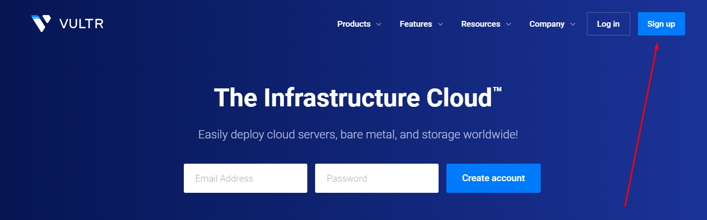
Заполняем форму, кликаем Create Account
В личном кабинете кликаем на плюсик:
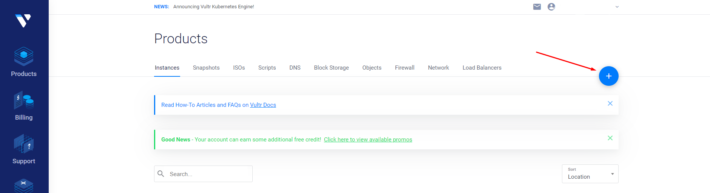
Нам нужен сервер с минимум 8 гигабайтами оперативной памяти, минимум 4 vCPU (потоками) и 200GB SSD, ищем, находим:
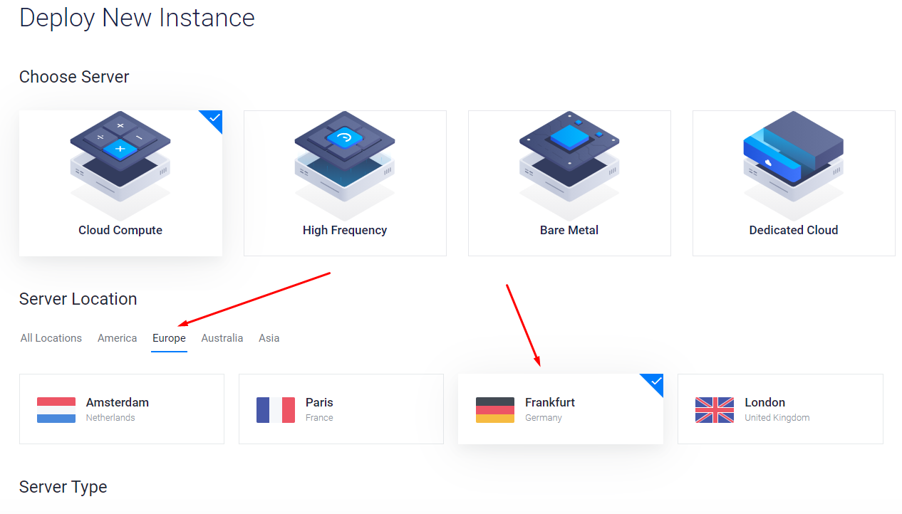

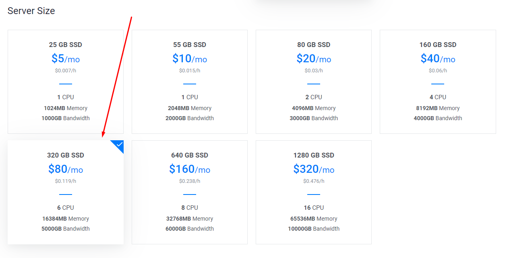
Арендуем
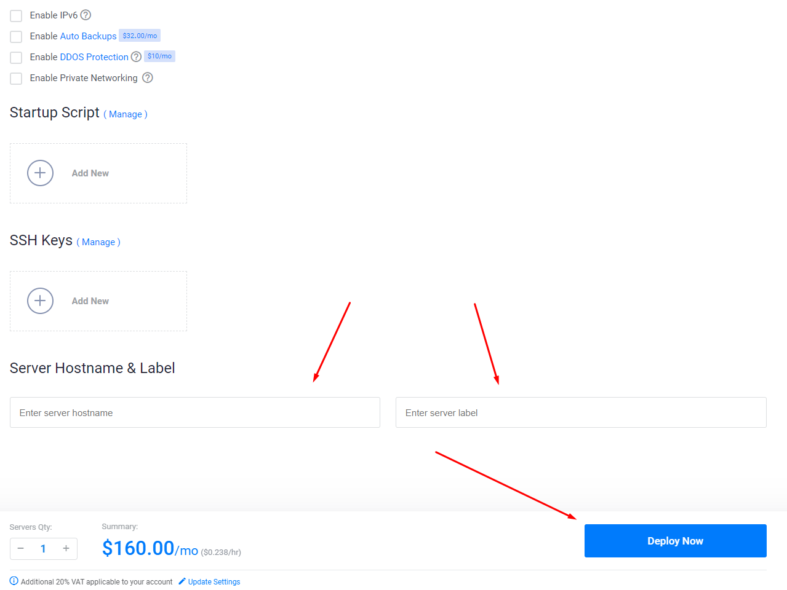
Кликаем на Products слева в верхнем углу, переходим в панель с нашими серверами, ждем пока сервер перейдет в статус Running, кликаем на сервер
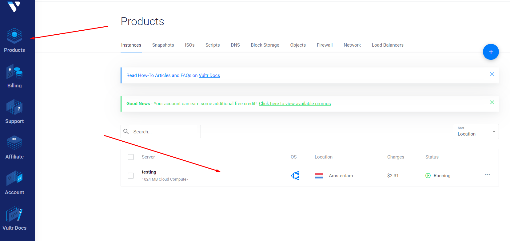
Теперь нам нужны данные для подключения к серверу: его IP, логин и пароль. Их мы можем найти в местах, указанных на скриншоте:
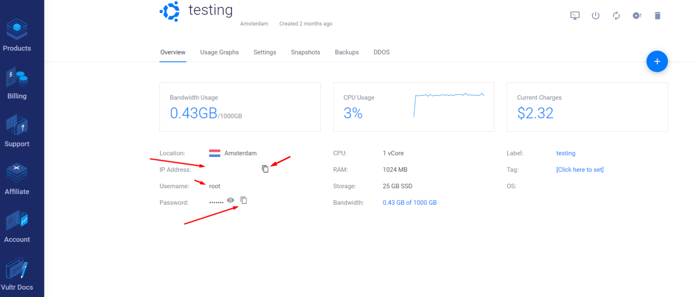
Нам нужно подключиться к нашему серверу, для этого воспользуемся программой Termius, скачиваем, устанавливаем, запускаем.
Необходимо создать новое подключение, для этого проделываем действия как на скриншоте
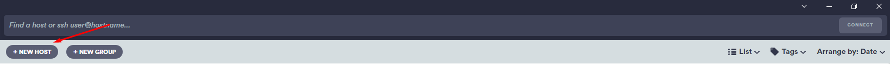
В указанные поля нужно внести данные которые мы получали из панели сервера в Vultr, а именно: IP, логин и пароль. В поле Label пишем что угодно - это название нашего севрера в списке серверов в Termius.
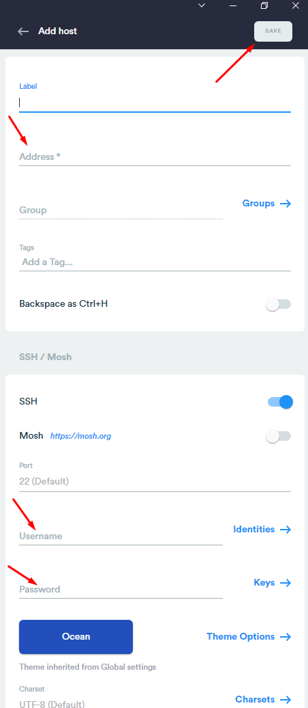
Два раза кликаем по добавленному серверу, в открывшемся диалоговом окне нажимаем "yes".
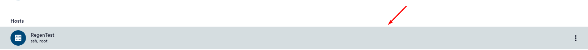
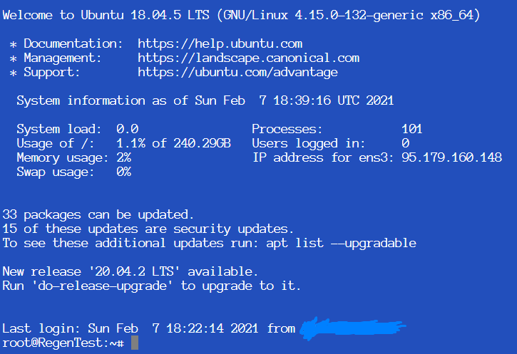
Поздравляю, вы зашли! Можно продолжать.
Регистрация
Переходим на сайт, кликаем Sign Up
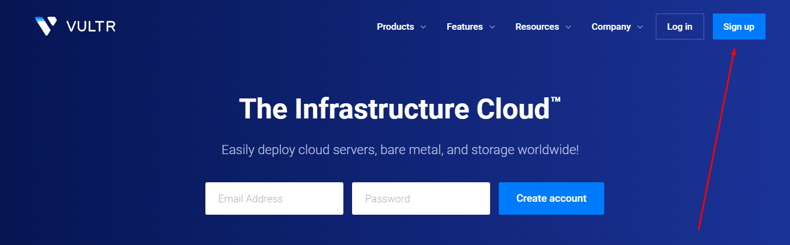
Заполняем форму, кликаем Create Account
В личном кабинете кликаем на плюсик:
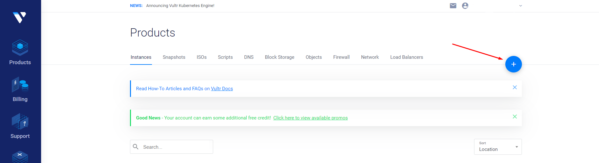
Нам нужен сервер с минимум 8 гигабайтами оперативной памяти, минимум 4 vCPU (потоками) и 200GB SSD, ищем, находим:
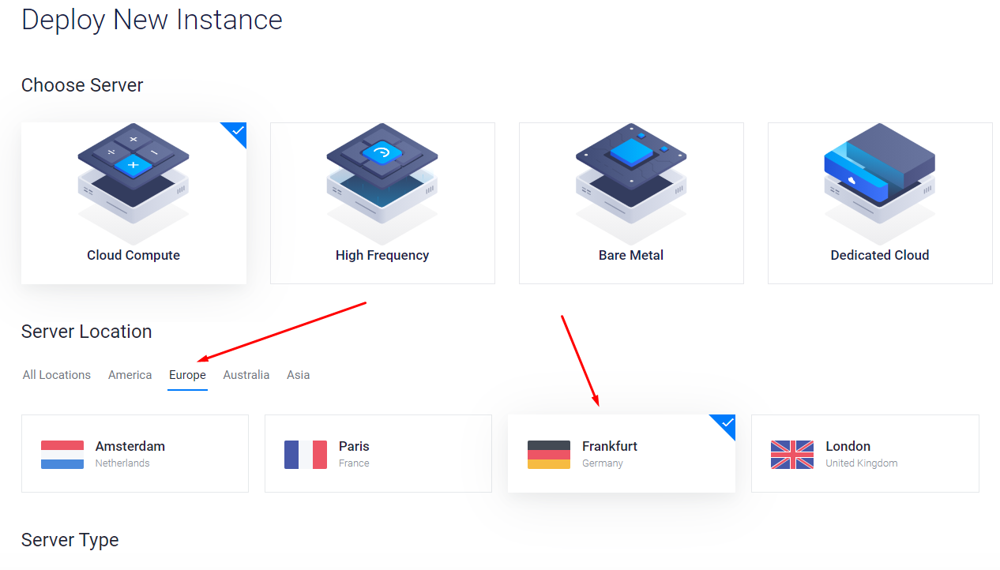
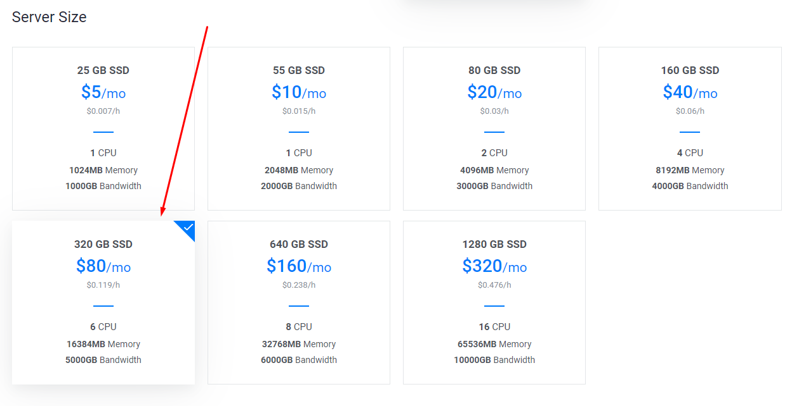
Арендуем
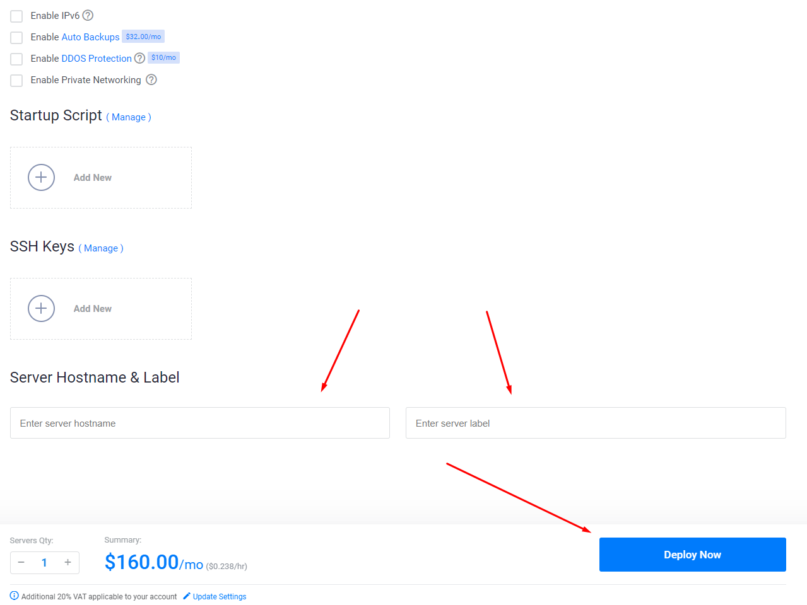
Кликаем на Products слева в верхнем углу, переходим в панель с нашими серверами, ждем пока сервер перейдет в статус Running, кликаем на сервер
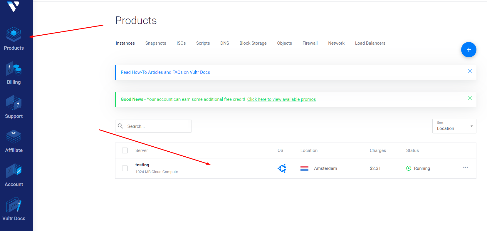
Теперь нам нужны данные для подключения к серверу: его IP, логин и пароль. Их мы можем найти в местах, указанных на скриншоте:
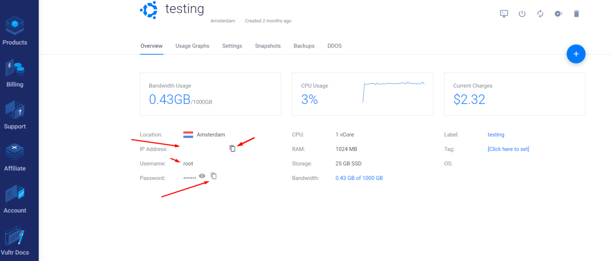
Нам нужно подключиться к нашему серверу, для этого воспользуемся программой Termius, скачиваем, устанавливаем, запускаем.
Необходимо создать новое подключение, для этого проделываем действия как на скриншоте
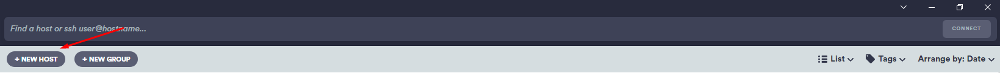
В указанные поля нужно внести данные которые мы получали из панели сервера в Vultr, а именно: IP, логин и пароль. В поле Label пишем что угодно - это название нашего севрера в списке серверов в Termius.
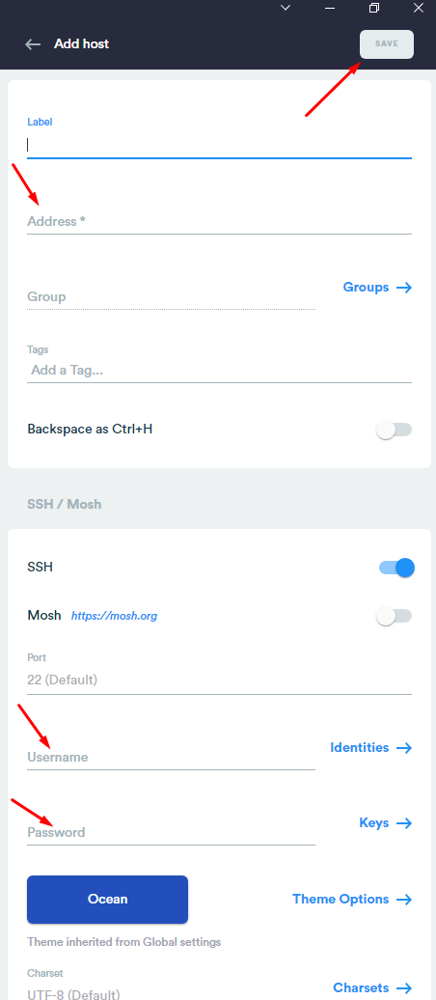
Два раза кликаем по добавленному серверу, в открывшемся диалоговом окне нажимаем "yes".
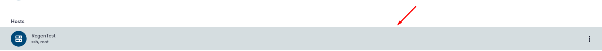
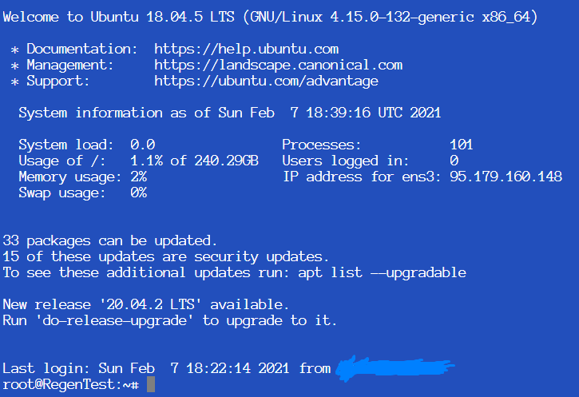
Поздравляю, вы зашли! Можно продолжать.
1. Подготовка сервера
1.1. Установка зависимостей
Для начала нам необходимо установить зависимости, для этого выполняем следующую
команду:
sudo apt-get install build-essential jq screen wget -y
sudo apt-get install build-essential jq screen wget -y
1.2. Установка Go
Для компиляции и последующей установки ноды нам нужно установить Go, делаем это
командами:
wget https://golang.org/dl/go1.15.8.linux-amd64.tar.gz
tar -C /usr/local -xzf go1.15.8.linux-amd64.tar.gz
echo 'export PATH=$PATH:/usr/local/go/bin' >> $HOME/.bashrc
echo 'export GOPATH=/usr/local/go' >> $HOME/.bashrc
source ~/.bashrc
go version
Должно вывести "go version go1.15.8..."
wget https://golang.org/dl/go1.15.8.linux-amd64.tar.gz
tar -C /usr/local -xzf go1.15.8.linux-amd64.tar.gz
echo 'export PATH=$PATH:/usr/local/go/bin' >> $HOME/.bashrc
echo 'export GOPATH=/usr/local/go' >> $HOME/.bashrc
source ~/.bashrc
go version
Должно вывести "go version go1.15.8..."
2. Установка ноды
Теперь нам нужно скомпилировать и установить ноду Regen, для этого выполняем следующие
команды:
mkdir -p $GOPATH/src/github.com/regen
cd $GOPATH/src/github.com/regen
git clone https://github.com/regen-network/regen-ledger.git
cd regen-ledger
git checkout v0.6.0
make install
Ждем конца процесса установки.
mkdir -p $GOPATH/src/github.com/regen
cd $GOPATH/src/github.com/regen
git clone https://github.com/regen-network/regen-ledger.git
cd regen-ledger
git checkout v0.6.0
make install
Ждем конца процесса установки.
Проверим, все ли установилось корректно:
regen version --long | grep "version"
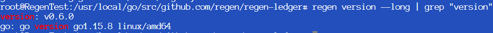
Если да - вы увидите примерно то же самое, что и на скриншоте. Если нет - повторите шаги выше.
regen version --long | grep "version"
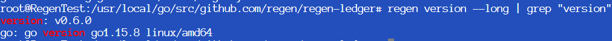
Если да - вы увидите примерно то же самое, что и на скриншоте. Если нет - повторите шаги выше.
3. Генерация ключа
Сначала нам нужно подготовить окружение к работе, для этого мы все будем делать в
отдельном скрине и запишем переменные, которые нам пригодятся позднее:
echo 'export REGEN_WALLET=имя кошелька' >> $HOME/.bashrc (если у вас уже есть кошелек - regen keys list)
echo 'export REGEN_MONIKER=имядляноды' >> $HOME/.bashrc (можно любое)
source ~/.bashrc
echo 'export REGEN_WALLET=имя кошелька' >> $HOME/.bashrc (если у вас уже есть кошелек - regen keys list)
echo 'export REGEN_MONIKER=имядляноды' >> $HOME/.bashrc (можно любое)
source ~/.bashrc
Для того, чтобы стать валидатором нам нужно инициализировать нашу ноду и добавить ключи. Для
этого выполняем следующие команды:
regen init --chain-id=aplikigo-1 $REGEN_MONIKER
Примерный вывод:
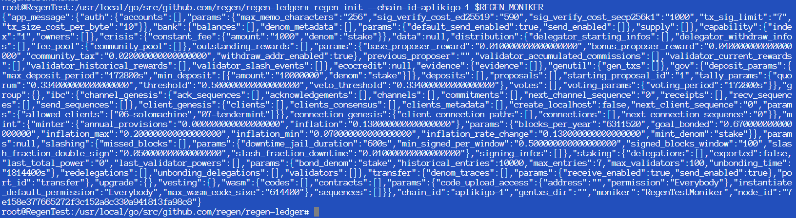
regen keys add $REGEN_WALLET
Два раза вводим наш пароль, нажимаем Enter. Готово, теперь у вас есть ключи.
regen init --chain-id=aplikigo-1 $REGEN_MONIKER
Примерный вывод:
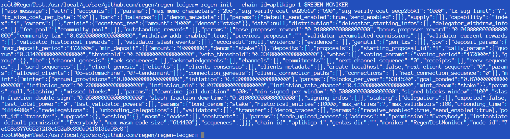
Следующий шаг нужно выполнять только в том случае, если у вас нет кошелька (regen
keys list - список ваших кошельков).
Если же у вас есть сид фраза, то вы можете восстановить свой кошелек следующей командой:
regen keys add $REGEN_WALLET --recover
Создать новый кошелек с названием $REGEN_WALLET:Если же у вас есть сид фраза, то вы можете восстановить свой кошелек следующей командой:
regen keys add $REGEN_WALLET --recover
regen keys add $REGEN_WALLET
Два раза вводим наш пароль, нажимаем Enter. Готово, теперь у вас есть ключи.
Обязательно запишите и сохраните вывод этой команды - используя сид (набор слов в последней строке вывода команды) вы сможете в последствии восстановить доступ к кошельку.
4. Работа над валидатором
4.1. Создание валидатора
В данный момент вы не можете создать валидатора если не прошли отбор в тестнет, однако, вы можете дождаться пока заработает кран для того, чтоб у вас появился баланс, который вы сможете застейкать.
Выполнять команду ниже если вы прошли в тестнет НЕ НУЖНО.
Для того, чтобы создать валидатора выполните следующую команду:Выполнять команду ниже если вы прошли в тестнет НЕ НУЖНО.
regen tx staking create-validator --amount=9000000utree \
--pubkey=$(regen tendermint show-validator) \
--moniker=$REGEN_MONIKER \
--chain-id=aplikigo-1 \
--commission-rate="0.10" \
--commission-max-rate="0.20" \
--commission-max-change-rate="0.01" \
--min-self-delegation="1" \
--gas="auto" \
--from=$REGEN_WALLET
--pubkey=$(regen tendermint show-validator) \
--moniker=$REGEN_MONIKER \
--chain-id=aplikigo-1 \
--commission-rate="0.10" \
--commission-max-rate="0.20" \
--commission-max-change-rate="0.01" \
--min-self-delegation="1" \
--gas="auto" \
--from=$REGEN_WALLET
4.2. Настройка валидатора
Для начала нам необходимо загрузить файл genesis.json в конфигурационный файл Regen:
curl https://raw.githubusercontent.com/regen-network/testnets/master/aplikigo-1/genesis.json > $HOME/.regen/config/genesis.json
curl https://raw.githubusercontent.com/regen-network/testnets/master/aplikigo-1/genesis.json > $HOME/.regen/config/genesis.json
Теперь нам нужно добавить seeds и persistent_peers в конфигурационный файл.
Для этого открываем конфигурационный файл:
nano $HOME/.regen/config/config.toml
Ищем там строчки seeds и persistent_peers, устанавливаем следующие значения:
seeds = "9082e4d408b0794f884f8c1733d7d11ffb010e38@161.35.51.84:26656"
persistent_peers = "35d64042e1a5f6466b2b1540fa2e859dfc49666e@public-rpc1.regen.vitwit.com:26656,9082e4d408b0794f884f8c1733d7d11ffb010e38@161.35.51.84:26656"
Жмем Ctrl + X, затем Y. Итоговый результат:
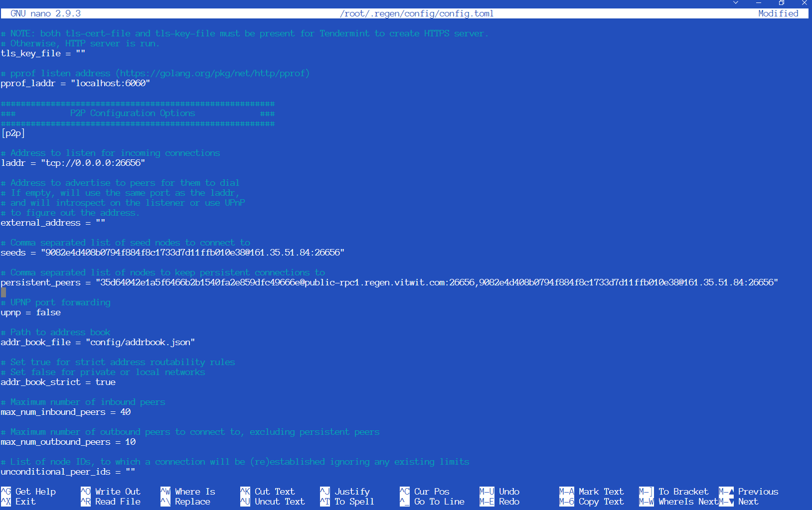
Для этого открываем конфигурационный файл:
nano $HOME/.regen/config/config.toml
Ищем там строчки seeds и persistent_peers, устанавливаем следующие значения:
seeds = "9082e4d408b0794f884f8c1733d7d11ffb010e38@161.35.51.84:26656"
persistent_peers = "35d64042e1a5f6466b2b1540fa2e859dfc49666e@public-rpc1.regen.vitwit.com:26656,9082e4d408b0794f884f8c1733d7d11ffb010e38@161.35.51.84:26656"
Жмем Ctrl + X, затем Y. Итоговый результат:
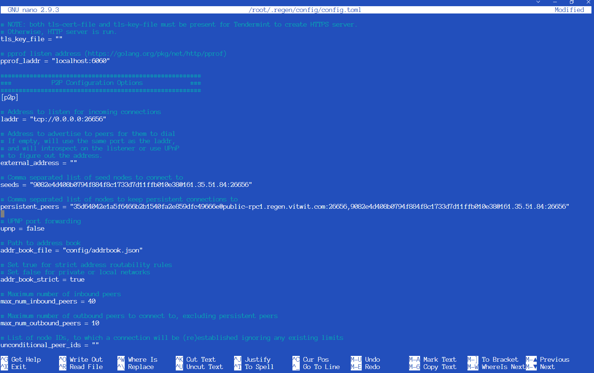
Осталось установить минимальную цену на газ, для этого открываем другой конфигурационный файл командой ниже:
nano $HOME/.regen/config/app.toml
Ищем там строчку minimum-gas-prices, устанавливаем следующее значение:
minimum-gas-prices = "0.025utree"
Жмем Ctrl + X, затем Y. Итоговый результат:
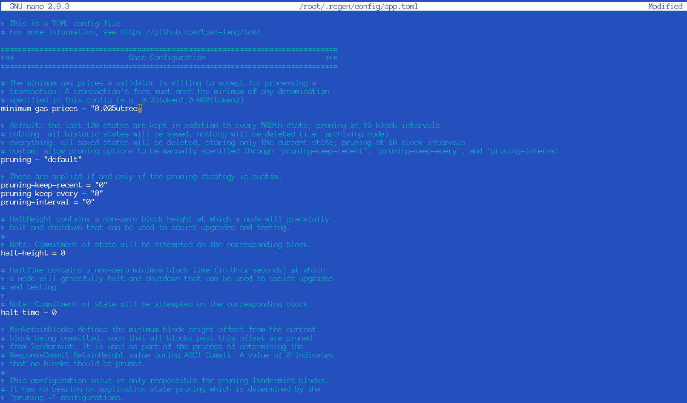
nano $HOME/.regen/config/app.toml
Ищем там строчку minimum-gas-prices, устанавливаем следующее значение:
minimum-gas-prices = "0.025utree"
Жмем Ctrl + X, затем Y. Итоговый результат:
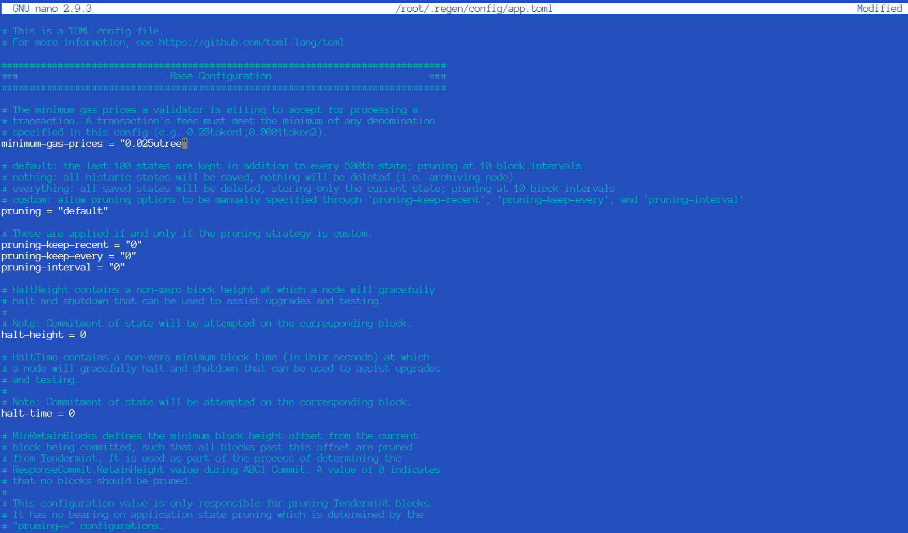
5. Запуск ноды
5.1. По-умолчанию
Для того, чтобы запустить ноду выполните следующую команду:
screen -S regen_node
regen start
Для выхода из screen нажмите Ctrl + A, затем D. В скрине с запущенной нодой вы должны видеть примерно следующее:
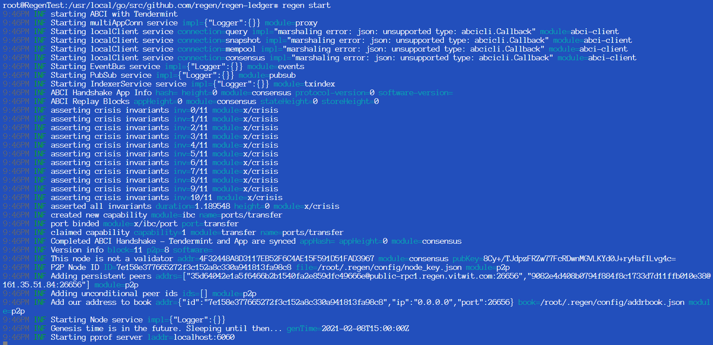
Проверьте статус командой:
regen status
screen -S regen_node
regen start
Для выхода из screen нажмите Ctrl + A, затем D. В скрине с запущенной нодой вы должны видеть примерно следующее:
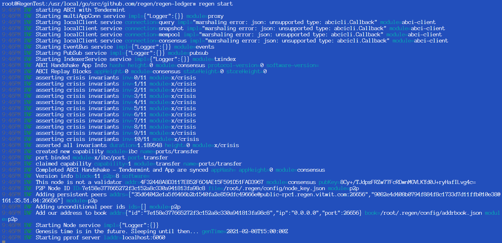
Проверьте статус командой:
regen status
5.2. В виде сервиса
Делаем regen сервисом следующими командами:
echo "[Unit] Description=Regen Node After=network-online.target [Service] User=${USER} ExecStart=${GOBIN}/regen start Restart=always RestartSec=3 LimitNOFILE=4096 [Install] WantedBy=multi-user.target " >regen.service
sudo mv regen.service /lib/systemd/system/
sudo systemctl daemon-reload
sudo systemctl enable regen.service
sudo systemctl start regen.service
echo "[Unit] Description=Regen Node After=network-online.target [Service] User=${USER} ExecStart=${GOBIN}/regen start Restart=always RestartSec=3 LimitNOFILE=4096 [Install] WantedBy=multi-user.target " >regen.service
sudo mv regen.service /lib/systemd/system/
sudo systemctl daemon-reload
sudo systemctl enable regen.service
sudo systemctl start regen.service
Проверьте статус командой:
regen status
Проверьте логи командой:
sudo journalctl -u regen -f
Поздрвляю, нода запущена!
regen status
Проверьте логи командой:
sudo journalctl -u regen -f